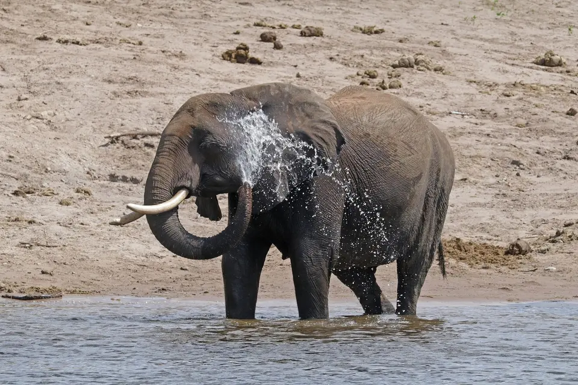

Why do elephants have such big ears?
Mainly to keep cool. An elephant's ears are thin sheets of skin packed with blood vessels; when it flaps them, blood flowing through the ears gives off heat before returning to the body, which the Smithsonian's National Zoo says can lower body temperature by several degrees. Big ears also help with hearing and are used for signaling, such as spreading them wide to look bigger. African elephants, many of which live in hot, open country, have much larger ears than Asian elephants.

The heat problem
Big animals have a cooling problem. As an animal gets larger, its volume (which produces heat) grows faster than its surface area (which loses heat). An elephant weighing several tonnes produces a lot of heat and has relatively little skin to shed it through. Elephants have no sweat glands spread over the body as people do, so they rely on other tricks: bathing, wallowing in mud, spraying themselves with water or dust, resting in shade during the hottest hours, and, above all, their ears.
How the ear radiator works
An elephant's ear is a huge, thin flap of skin; San Diego Zoo Wildlife Alliance notes that elephant skin is paper thin on the inside of the ears even though it can be about 2.5 cm thick on the back. Running through that skin is a dense network of blood vessels. When an elephant flaps its ears, air moves across the surface and the blood inside cools. The Smithsonian's National Zoo explains that this cooled blood then helps cool the brain and travels back through the body, lowering body temperature by several degrees.
Elephants control this actively. On hot, still days they flap their ears more often, and after a bath the effect is stronger, because water evaporating from wet ears pulls away extra heat. San Diego Zoo Wildlife Alliance describes the ears as working "like a radiator."
Why African ears are bigger
African savanna elephants have the biggest ears of any elephant, large enough to cover much of the shoulder. Asian elephants' ears are much smaller and rounded. The usual explanation is the same heat problem. Savanna elephants are the largest species and often live in hot, open grassland and bush with limited shade, so a larger radiator is useful. Asian elephants mostly live in forest or forest edge habitats with more shade.
The African forest elephant supports the idea: it lives under rainforest canopy, is smaller than the savanna elephant, and has rounder, more oval ears (WWF). This pattern, where animals in hotter climates have larger extremities, is common in nature, though ear size is unlikely to be explained by temperature alone. See our species comparison for how to use ears to tell the species apart.
Ears and hearing
Elephants hear well, especially at low frequencies. They communicate with rumbles that include infrasound, too low for people to hear, which the Smithsonian says can be understood by other elephants more than 2 miles away. Large outer ears help collect sound. Elephants also seem to pick up low frequency vibrations through the ground: research by Caitlin O'Connell-Rodwell and colleagues found that wild African elephants responded to alarm calls played back as seismic vibrations, and responded differently to familiar and unfamiliar callers. More on the behavior page.
Ears as signals
Ears also send messages. An elephant that spreads its ears wide suddenly looks much bigger, which is a common sign of alertness, excitement or a threat display toward a rival or intruder. Relaxed elephants hold their ears against the body or flap them gently. If you are watching wild elephants, spread ears combined with head shaking, a raised trunk or a step forward mean it is time to give the animal more space. Our safety tips cover this.
A natural ID card
Over a lifetime, elephant ears collect nicks, tears and holes, and their shape and vein patterns vary between individuals. Field researchers commonly use these features, along with tusks, to recognize individual elephants, which is how long term studies are able to follow the same families for decades.
The bottom line
Elephant ears are first and foremost cooling devices: blood rich radiators that let one of the largest animals on land survive in the heat. They also collect sound, send social signals and, for scientists, work as identity badges. Read more about the rest of the body on our elephant anatomy page.
Frequently asked questions
Why do elephants flap their ears?
To cool down. Flapping moves air over the thin, blood rich skin of the ears, so the blood loses heat before it circulates back through the body. Elephants flap more on hot days and after a bath or mud wallow, when wet skin cools even faster.
Why do African elephants have bigger ears than Asian elephants?
A widely accepted explanation is climate and habitat: African savanna elephants are larger and often live in hot, open landscapes with little shade, so they need more surface area to shed heat, while Asian elephants mostly live in shadier forest. Forest elephants, which also live under canopy, have rounder, more oval ears than savanna elephants.
Can elephants hear with their feet?
Elephants detect low frequency vibrations through the ground as well as through the air. Research by Caitlin O'Connell-Rodwell and colleagues found that wild African elephants responded to seismic playbacks of alarm calls transmitted through the ground.
What does it mean when an elephant spreads its ears?
Spread ears make an elephant look larger and often signal alertness, excitement or a warning. If a wild elephant spreads its ears and faces you, especially with head shaking or a step forward, back away calmly and give it space.
Sources
Cite this page
APA
TuskWise. (2026, October 8). Why do elephants have such big ears? https://tuskwise.com/blog/why-do-elephants-have-big-ears.html
MLA
“Why do elephants have such big ears?” TuskWise, Joshua Israel Ventures LLC, 8 Oct. 2026, tuskwise.com/blog/why-do-elephants-have-big-ears.html.
Chicago
TuskWise. “Why do elephants have such big ears?” Joshua Israel Ventures LLC. Last modified October 8, 2026. https://tuskwise.com/blog/why-do-elephants-have-big-ears.html.